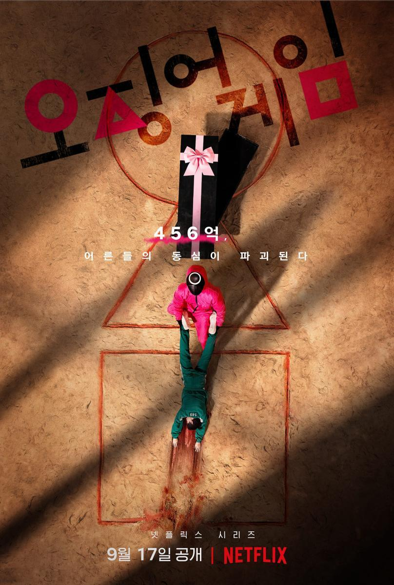

RVM

Profile
Trò chơi con mực xuất phát từ trò chơi dân gian “mực ống” của những đứa trẻ nhỏ, đó là một hình vẽ giống như con mực ống. Luật chơi rất đơn giản, bọn trẻ sẽ chia thành 2 phe: phe tấn công và phe phòng thủ.
Nhiệm vụ của phe tấn công là phải dẫm chân được vào hình tam giác nhỏ trên đầu mực ống. Nếu bị phe phòng thủ đẩy ra khỏi vạch hoặc đạp lên vạch, phe tấn công sẽ chết.
Nếu ở trò chơi dân gian trẻ thơ, chết chỉ đơn giản là thua cuộc thì trong Trò chơi con mực của người lớn, chết là hết, là chết thật. Vậy ai sẽ dám đánh cược mạng sống để lao vào trò chơi, cái gì đủ sức mạnh đến nỗi khiến họ bất chấp tất cả?
Câu trả lời cũng thật rõ ràng: Đó không chỉ là tiền, mà là rất nhiều tiền.
Thế lực đứng ra tổ chức trò chơi này vô cùng bí ẩn. Toàn bộ nhân viên của họ đều đeo mặt nạ. 456 người chấp nhận tham gia trò chơi đều là những con nợ khổng lồ đang thèm tiền như cá thèm nước.
Trò chơi con mực diễn ra trong vòng 6 ngày với 6 trò chơi, người chiến thắng cuối cùng sẽ dành được 45,6 tỉ won.